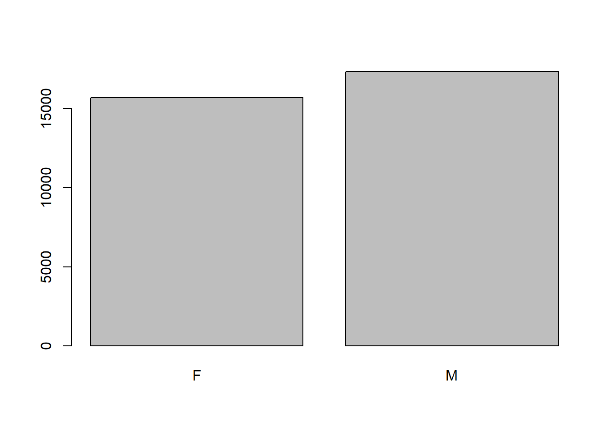
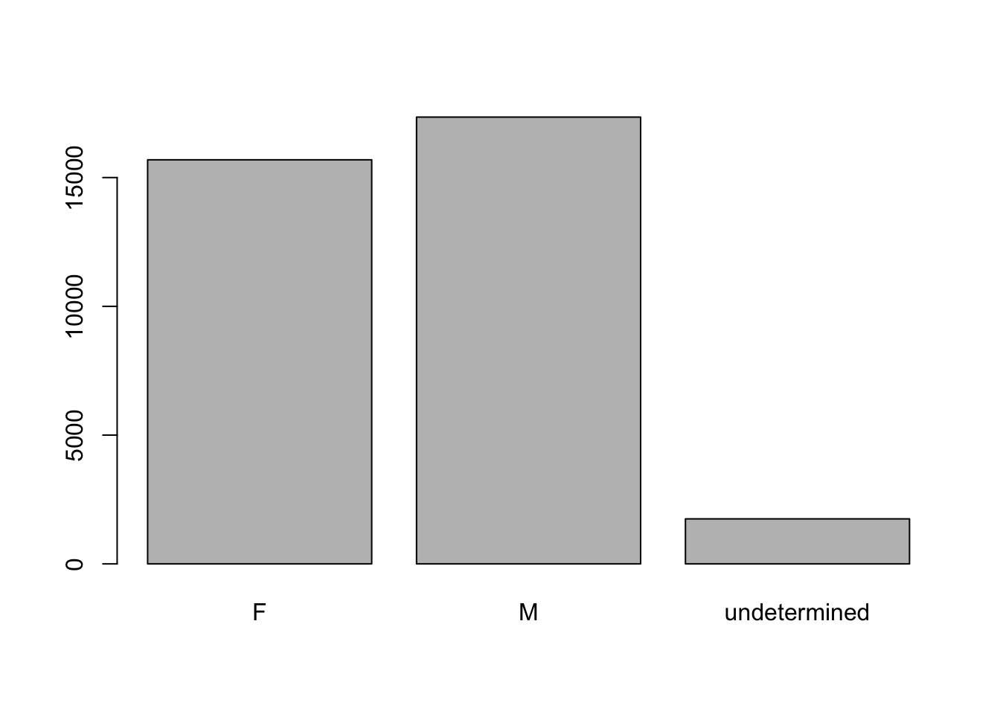

Starting with data
Loading the survey data
We are investigating the animal species diversity and weights found within plots at our study site. The dataset is stored as a comma separated value (CSV) file. Each row holds information for a single animal, and the columns represent:
| Column | Description |
|---|---|
| record_id | Unique id for the observation |
| month | month of observation |
| day | day of observation |
| year | year of observation |
| plot_id | ID of a particular experimental plot of land |
| species_id | 2-letter code |
| sex | sex of animal (“M”, “F”) |
| hindfoot_length | length of the hindfoot in mm |
| weight | weight of the animal in grams |
| genus | genus of animal |
| species | species of animal |
| taxon | e.g. Rodent, Reptile, Bird, Rabbit |
| plot_type | type of plot |
Downloading the data
We created the folder that will store the downloaded data (data_raw) in the chapter “Before we start”. If you skipped that part, it may be a good idea to have a look now, to make sure your working directory is set up properly.
We are going to use the R function download.file() to download the CSV file that contains the survey data from Figshare, and we will use read_csv() to load the content of the CSV file into R.
Inside the download.file command, the first entry is a character string with the source URL (“https://ndownloader.figshare.com/files/2292169”). This source URL downloads a CSV file from figshare. The text after the comma (“data_raw/portal_data_joined.csv”) is the destination of the file on your local machine. You’ll need to have a folder on your machine called “data_raw” where you’ll download the file. So this command downloads a file from Figshare, names it “portal_data_joined.csv” and adds it to a preexisting folder named “data_raw”.
download.file(url = "https://ndownloader.figshare.com/files/2292169",
destfile = "data_raw/portal_data_joined.csv")Reading the data into R
The file has now been downloaded to the destination you specified, but R has not yet loaded the data from the file into memory. To do this, we can use the read_csv() function from the tidyverse package.
Packages in R are basically sets of additional functions that let you do more stuff. The functions we’ve been using so far, like round(), sqrt(), or c() come built into R. Packages give you access to additional functions beyond base R. A similar function to read_csv() from the tidyverse package is read.csv() from base R. We don’t have time to cover their differences but notice that the exact spelling determines which function is used. Before you use a package for the first time you need to install it on your machine, and then you should import it in every subsequent R session when you need it.
To install the tidyverse package, we can type install.packages("tidyverse") straight into the console. In fact, it’s better to write this in the console than in our script for any package, as there’s no need to re-install packages every time we run the script. Then, to load the package type:
Now we can use the functions from the tidyverse package. Let’s use read_csv() to read the data into a data frame (we will learn more about data frames later):
surveys <- read_csv("data_raw/portal_data_joined.csv")#> Rows: 34786 Columns: 13
#> ── Column specification ────────────────────────────────────────────────────────
#> Delimiter: ","
#> chr (6): species_id, sex, genus, species, taxa, plot_type
#> dbl (7): record_id, month, day, year, plot_id, hindfoot_length, weight
#>
#> ℹ Use `spec()` to retrieve the full column specification for this data.
#> ℹ Specify the column types or set `show_col_types = FALSE` to quiet this message.When you execute read_csv on a data file, it looks through the first 1000 rows of each column and guesses its data type. For example, in this dataset, read_csv() reads weight as col_double (a numeric data type), and species as col_character. You have the option to specify the data type for a column manually by using the col_types argument in read_csv.
read_csv() assumes that fields are delineated by commas. However, in several countries, the comma is used as a decimal separator and the semicolon (;) is used as a field delineator. If you want to read in this type of files in R, you can use the read_csv2() function. It behaves like read_csv() but uses different parameters for the decimal and the field separators. There is also the read_tsv() for tab separated data files and read_delim() for less common formats. Check out the help for read_csv() by typing ?read_csv to learn more.
In addition to the above versions of the csv format, you should develop the habits of looking at and recording some parameters of your csv files. For instance, the character encoding, control characters used for line ending, date format (if the date is not split into three variables), and the presence of unexpected newlines are important characteristics of your data files. Those parameters will ease up the import step of your data in R.
We can see the contents of the first few lines of the data by typing its name: surveys. By default, this will show you as many rows and columns of the data as fit on your screen. If you wanted the first 50 rows, you could type print(surveys, n = 50)
We can also extract the first few lines of this data using the function head():
head(surveys)#> # A tibble: 6 × 13
#> record_id month day year plot_id species_id sex hindfoot_length weight
#> <dbl> <dbl> <dbl> <dbl> <dbl> <chr> <chr> <dbl> <dbl>
#> 1 1 7 16 1977 2 NL M 32 NA
#> 2 72 8 19 1977 2 NL M 31 NA
#> 3 224 9 13 1977 2 NL <NA> NA NA
#> 4 266 10 16 1977 2 NL <NA> NA NA
#> 5 349 11 12 1977 2 NL <NA> NA NA
#> 6 363 11 12 1977 2 NL <NA> NA NA
#> # … with 4 more variables: genus <chr>, species <chr>, taxa <chr>,
#> # plot_type <chr>Unlike the print() function, head() returns the extracted data. You could use it to assign the first 100 rows of surveys to an object using surveys_sample <- head(surveys, 100). This can be useful if you want to try out complex computations on a subset of your data before you apply them to the whole data set. There is a similar function that lets you extract the last few lines of the data set. It is called (you might have guessed it) tail().
To open the dataset in RStudio’s Data Viewer, use the view() function:
view(surveys)What are data frames?
When we loaded the data into R, it got stored as an object of class tibble, which is a special kind of data frame (the difference is not important for our purposes, but you can learn more about tibbles here). Data frames are the de facto data structure for most tabular data, and what we use for statistics and plotting. Data frames can be created by hand, but most commonly they are generated by functions like read_csv(); in other words, when importing spreadsheets from your hard drive or the web.
A data frame is the representation of data in the format of a table where the columns are vectors that all have the same length. Because columns are vectors, each column must contain a single type of data (e.g., characters, integers, factors). For example, here is a figure depicting a data frame comprising a numeric, a character, and a logical vector.

We can see this also when inspecting the structure of a data frame with the function str():
str(surveys)Inspecting data frames
We already saw how the functions head() and str() can be useful to check the content and the structure of a data frame. Here is a non-exhaustive list of functions to get a sense of the content/structure of the data. Let’s try them out!
- Size:
-
dim(surveys)- returns a vector with the number of rows in the first element, and the number of columns as the second element (the dimensions of the object) -
nrow(surveys)- returns the number of rows -
ncol(surveys)- returns the number of columns
-
- Content:
-
head(surveys)- shows the first 6 rows -
tail(surveys)- shows the last 6 rows
-
- Names:
-
names(surveys)- returns the column names (synonym ofcolnames()fordata.frameobjects) -
rownames(surveys)- returns the row names
-
- Summary:
-
str(surveys)- structure of the object and information about the class, length and content of each column -
summary(surveys)- summary statistics for each column
-
Note: most of these functions are “generic”, they can be used on other types of objects besides data.frame.
Indexing and subsetting data frames
Our survey data frame has rows and columns (it has 2 dimensions), if we want to extract some specific data from it, we need to specify the “coordinates” we want from it. Row numbers come first, followed by column numbers. However, note that different ways of specifying these coordinates lead to results with different classes.
# We can extract specific values by specifying row and column indices
# in the format:
# data_frame[row_index, column_index]
# For instance, to extract the first row and column from surveys:
surveys[1, 1]
# First row, sixth column:
surveys[1, 6]
# We can also use shortcuts to select a number of rows or columns at once
# To select all columns, leave the column index blank
# For instance, to select all columns for the first row:
surveys[1, ]
# The same shortcut works for rows --
# To select the first column across all rows:
surveys[, 1]
# An even shorter way to select first column across all rows:
surveys[1] # No comma!
# To select multiple rows or columns, use vectors!
# To select the first three rows of the 5th and 6th column
surveys[c(1, 2, 3), c(5, 6)]
# We can use the : operator to create those vectors for us:
surveys[1:3, 5:6]
# This is equivalent to head_surveys <- head(surveys)
head_surveys <- surveys[1:6, ]
# As we've seen, when working with tibbles
# subsetting with single square brackets ("[]") always returns a data frame.
# If you want a vector, use double square brackets ("[[]]")
# For instance, to get the first column as a vector:
surveys[[1]]
# To get the first value in our data frame:
surveys[[1, 1]]: is a special function that creates numeric vectors of integers in increasing or decreasing order, test 1:10 and 10:1 for instance.
You can also exclude certain indices of a data frame using the “-” sign:
surveys[, -1] # The whole data frame, except the first column
surveys[-(7:nrow(surveys)), ] # Equivalent to head(surveys)Data frames can be subset by calling indices (as shown previously), but also by calling their column names directly:
# As before, using single brackets returns a data frame:
surveys["species_id"]
surveys[, "species_id"]
# Double brackets returns a vector:
surveys[["species_id"]]
# We can also use the $ operator with column names instead of double brackets
# This returns a vector:
surveys$species_idIn RStudio, you can use the autocompletion feature to get the full and correct names of the columns.
Factors
When we did str(surveys) we saw that several of the columns consist of integers. The columns genus, species, sex, plot_type, … however, are of the class character. Arguably, these columns contain categorical data, that is, they can only take on a limited number of values.
R has a special class for working with categorical data, called factor. Factors are very useful and actually contribute to making R particularly well suited to working with data. So we are going to spend a little time introducing them.
Once created, factors can only contain a pre-defined set of values, known as levels. Factors are stored as integers associated with labels and they can be ordered or unordered. While factors look (and often behave) like character vectors, they are actually treated as integer vectors by R. So you need to be very careful when treating them as strings.
When importing a data frame with read_csv(), the columns that contain text are not automatically coerced (=converted) into the factor data type, but once we have loaded the data we can do the conversion using the factor() function:
surveys$sex <- factor(surveys$sex)We can see that the conversion has worked by using the summary() function again. This produces a table with the counts for each factor level:
summary(surveys$sex)By default, R always sorts levels in alphabetical order. For instance, if you have a factor with 2 levels:
R will assign 1 to the level "female" and 2 to the level "male" (because f comes before m, even though the first element in this vector is "male"). You can see this by using the function levels() and you can find the number of levels using nlevels():
Sometimes, the order of the factors does not matter, other times you might want to specify the order because it is meaningful (e.g., “low”, “medium”, “high”), it improves your visualization, or it is required by a particular type of analysis. Here, one way to reorder our levels in the sex vector would be:
sex # current order#> [1] male female female male
#> Levels: female male#> [1] male female female male
#> Levels: male femaleIn R’s memory, these factors are represented by integers (1, 2, 3), but are more informative than integers because factors are self describing: "female", "male" is more descriptive than 1, 2. Which one is “male”? You wouldn’t be able to tell just from the integer data. Factors, on the other hand, have this information built in. It is particularly helpful when there are many levels (like the species names in our example dataset).
Converting factors
If you need to convert a factor to a character vector, you use as.character(x).
as.character(sex)In some cases, you may have to convert factors where the levels appear as numbers (such as concentration levels or years) to a numeric vector. For instance, in one part of your analysis the years might need to be encoded as factors (e.g., comparing average weights across years) but in another part of your analysis they may need to be stored as numeric values (e.g., doing math operations on the years). This conversion from factor to numeric is a little trickier. The as.numeric() function returns the index values of the factor, not its levels, so it will result in an entirely new (and unwanted in this case) set of numbers. One method to avoid this is to convert factors to characters, and then to numbers.
Another method is to use the levels() function. Compare:
year_fct <- factor(c(1990, 1983, 1977, 1998, 1990))
as.numeric(year_fct) # Wrong! And there is no warning...
as.numeric(as.character(year_fct)) # Works...
as.numeric(levels(year_fct))[year_fct] # The recommended way.Notice that in the levels() approach, three important steps occur:
- We obtain all the factor levels using
levels(year_fct) - We convert these levels to numeric values using
as.numeric(levels(year_fct)) - We then access these numeric values using the underlying integers of the vector
year_fctinside the square brackets
Renaming factors
When your data is stored as a factor, you can use the plot() function to get a quick glance at the number of observations represented by each factor level. Let’s look at the number of males and females captured over the course of the experiment:
## bar plot of the number of females and males captured during the experiment:
plot(surveys$sex)
However, as we saw when we used summary(surveys$sex), there are about 1700 individuals for which the sex information hasn’t been recorded. To show them in the plot, we can turn the missing values into a factor level with the addNA() function. We will also have to give the new factor level a label. We are going to work with a copy of the sex column, so we’re not modifying the working copy of the data frame:
sex <- surveys$sex
levels(sex)#> [1] "F" "M"#> [1] "F" "M" NAhead(sex)#> [1] M M <NA> <NA> <NA> <NA>
#> Levels: F M <NA>#> [1] "F" "M" "undetermined"head(sex)#> [1] M M undetermined undetermined undetermined
#> [6] undetermined
#> Levels: F M undeterminedNow we can plot the data again, using plot(sex).

The automatic conversion of data type is sometimes a blessing, sometimes an annoyance. Be aware that it exists, learn the rules, and double check that data you import in R are of the correct type within your data frame. If not, use it to your advantage to detect mistakes that might have been introduced during data entry (for instance, a letter in a column that should only contain numbers).
Learn more in this RStudio tutorial
Formatting dates
A common issue that new (and experienced!) R users have is converting date and time information into a variable that is suitable for analyses. One way to store date information is to store each component of the date in a separate column. Using str(), we can confirm that our data frame does indeed have a separate column for day, month, and year, and that each of these columns contains integer values.
str(surveys)We are going to use the ymd() function from the package lubridate (which belongs to the tidyverse; learn more here). lubridate gets installed as part as the tidyverse installation. When you load the tidyverse (library(tidyverse)), the core packages (the packages used in most data analyses) get loaded. lubridate however does not belong to the core tidyverse, so you have to load it explicitly with library(lubridate)
Start by loading the required package:
The lubridate package has many useful functions for working with dates. These can help you extract dates from different string representations, convert between timezones, calculate time differences and more. You can find an overview of them in the lubridate cheat sheet.
Here we will use the function ymd(), which takes a vector representing year, month, and day, and converts it to a Date vector. Date is a class of data recognized by R as being a date and can be manipulated as such. The argument that the function requires is flexible, but, as a best practice, is a character vector formatted as “YYYY-MM-DD”.
Let’s create a date object and inspect the structure:
Now let’s paste the year, month, and day separately - we get the same result:
Now we apply this function to the surveys dataset. Create a character vector from the year, month, and day columns of surveys using paste():
paste(surveys$year, surveys$month, surveys$day, sep = "-")This character vector can be used as the argument for ymd():
There is a warning telling us that some dates could not be parsed (understood) by the ymd() function. For these dates, the function has returned NA, which means they are treated as missing values. We will deal with this problem later, but first we add the resulting Date vector to the surveys data frame as a new column called date:
#> Warning: 129 failed to parse.str(surveys) # notice the new column, with 'date' as the classLet’s make sure everything worked correctly. One way to inspect the new column is to use summary():
summary(surveys$date)#> Min. 1st Qu. Median Mean 3rd Qu. Max.
#> "1977-07-16" "1984-03-12" "1990-07-22" "1990-12-15" "1997-07-29" "2002-12-31"
#> NA's
#> "129"Let’s investigate why some dates could not be parsed.
We can use the functions we saw previously to deal with missing data to identify the rows in our data frame that are failing. If we combine them with what we learned about subsetting data frames earlier, we can extract the columns “year,”month”, “day” from the records that have NA in our new column date. We will also use head() so we don’t clutter the output:
#> # A tibble: 6 × 3
#> year month day
#> <dbl> <dbl> <dbl>
#> 1 2000 9 31
#> 2 2000 4 31
#> 3 2000 4 31
#> 4 2000 4 31
#> 5 2000 4 31
#> 6 2000 9 31Why did these dates fail to parse? If you had to use these data for your analyses, how would you deal with this situation?
The answer is because the dates provided as input for the ymd() function do not actually exist. If we refer to the output we got above, September and April only have 30 days, not 31 days as it is specified in our dataset.
There are several ways you could deal with situation: * If you have access to the raw data (e.g., field sheets) or supporting information (e.g., field trip reports/logs), check them and ensure the electronic database matches the information in the original data source. * If you are able to contact the person responsible for collecting the data, you could refer to them and ask for clarification. * You could also check the rest of the dataset for clues about the correct value for the erroneous dates. * If your project has guidelines on how to correct this sort of errors, refer to them and apply any recommendations. * If it is not possible to ascertain the correct value for these observations, you may want to leave them as missing data.
Regardless of the option you choose, it is important that you document the error and the corrections (if any) that you apply to your data.
Page built on: 📆 2022-06-30 ‒ 🕢 10:49:49